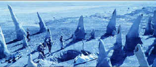

| Pitch
Black (SE)/B,A- |
| Universal/2000/112/ |
Pitch
Black is really pretty good. With a very quick set-up it never
stops moving forward toward the inevitable. It is derivative and in some
ways it will remind you of Alien, even down to the tenticled night
creatures, but solid writing and directing give Pitch Black it's
own voice.
A space ship with 40 or so passengers and
crew traveling in hibernation runs
into unexpected trouble. They are thrust from sleep into the nightmare of a disintegrating
ship. The captain's a quick die and number two, a pretty lady, takes on
the controls to bring the ship to a safe land harbor. Lots of pyrotechnics
and thumps and crunches later, the survivors collect themselves on a
unique, three-sunned, planet. One of the sun's blue glow provides
cinematographer David Eggby powerful ammunition for a variety of
startlingly gorgeous images.
Once on the planet, the small band of survivors
face multiple dangers. Led by the pretty Fry in reluctant command, and
assisted by pushy cop Johns, the group must first deal with the
elements and then with escaped criminal Riddick before finally facing the
ultimate menace. Survival is a tenuous challenge and the script is fraught
with surprises, well reasoned surprises I might add.
 |
|
It's cool to have a
blue sun. ©Universal |
Vin
Diesel as Riddick, is a convincing tough guy, muscled with clipped
dialogue delivered in a deep testosterone voice and a nice little
"eye polish." I've never seen actress Radha Mitchell who plays
heroine Fry before, but she's appealing and energetic enough, though
perhaps some underbelly angst could have made her jump my bones a trifle
more. Cole Hauser is effective enough as Johns and Keith David, a great
ensemble player, dressed in Arab clothing, adds a sense of style to the
chase.
Writer/director David Twohy does an outstanding
job of keeping this space/horror adventure on track. Twohy's editing is
happily restrained. I have grown tired of action distilled through
frenetic cutting. Twohy allows the viewer to understand the action. The
special effects work is delivered with maximum impact. The combination of
visual power accentuated by the sonic thrust keeps Pitch Black
running on high octane fuel. As a writer, Twohy has delivered some
excellent action and scifi scripts, including The Fugitive, Waterworld,
and The Arrival. The later film, a snazzy scifi exercise in
originality, was also directed by Twohy.
The Dolby Digital 5:1 and DTS sound both really
rock on this DVD. The swooshing of the space creatures inhabits the home
theater air with eerie effectiveness. Bass drop kicks are effectively
delivered. Vin Diesel's dialogue is a little difficult to understand at
times, but overall this is sound to cry for. I'd probably give my vote to
the slightly more aggressive DTS tracks.
Pitch Black has been turned into an outstanding
DVD. Great care must have gone into the transfer with a plethora of
lighting conditions to deal with and lots of dim lighting. The DVD is
sharp without enhancement and the colors are subtle. There's virtually no
film grain and the special effects are captured with ghostly
precision.
There isn't any sex in Pitch Black, so the
unrated special edition simply piles blood and gore to a somewhat higher level.
The R edition is three minutes shorter and is also available as a special
edition. Two commentary tracks are at the heart of the special edition. On
track one, director Twohy joins actors Vin Diesel and Cole Hauser to reminisce
about the film experience. There's a chattiness to the group, as is often
the case when more than these tracks are put together with a group, but
it's fun. On the other track, Twohy joins special effects supervisor Peter
Chiang to deliver commentary on that aspect of the film.
|
|

Selections from the feature archive
include articles on
Akira Kurosawa, Frank
Darabont, Blonde
Bimbos, Hollywood
Street Gangs, or Vietnam:
The Hollywood Pariah, and many more....
Body
Parts

Hollywood's long fascination with
parts of the body is explored piece by piece.

The
Movie Poster Archive includes extensive poster images from the
films of stars like Susan Hayward, Kirk Douglas, Katharine
Hepburn and many more. Our featured star is
Tyrone
Power.
 
An elegantly presented fan site dedicated to one of Hollywood's
great action stars.
 Direct
from the corridors of the Home
Theater Forum, Home Theater Talk is
the newest place on the Net to
discuss everything home theater.
Friendly atmosphere and
knowledgeable folks are the secret
ingredients. Direct
from the corridors of the Home
Theater Forum, Home Theater Talk is
the newest place on the Net to
discuss everything home theater.
Friendly atmosphere and
knowledgeable folks are the secret
ingredients.

Excellent resource for movie review
links, with many early looks.

First Run Features
boasts a library of independent and foreign features available on
DVD and VHS. Check out their web site for catalog details.

News, information, features about
current films in theaters and in the pipeline. Easy to use
interface.
|